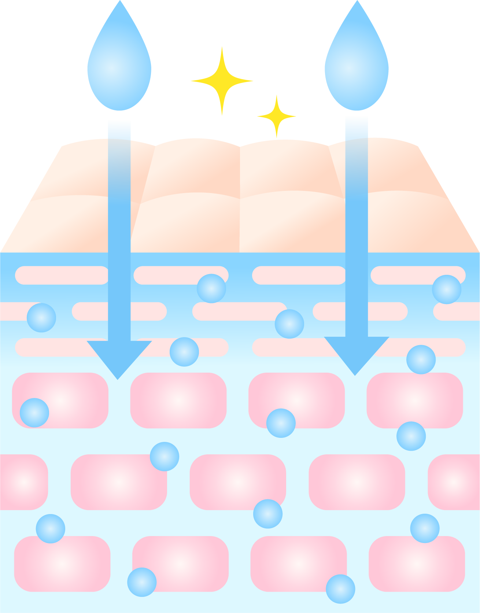
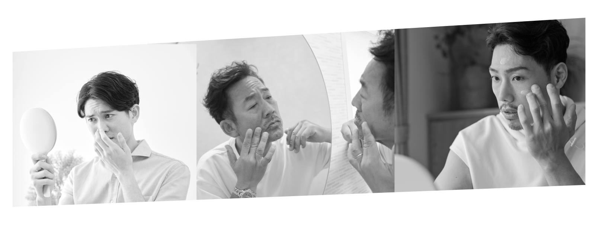
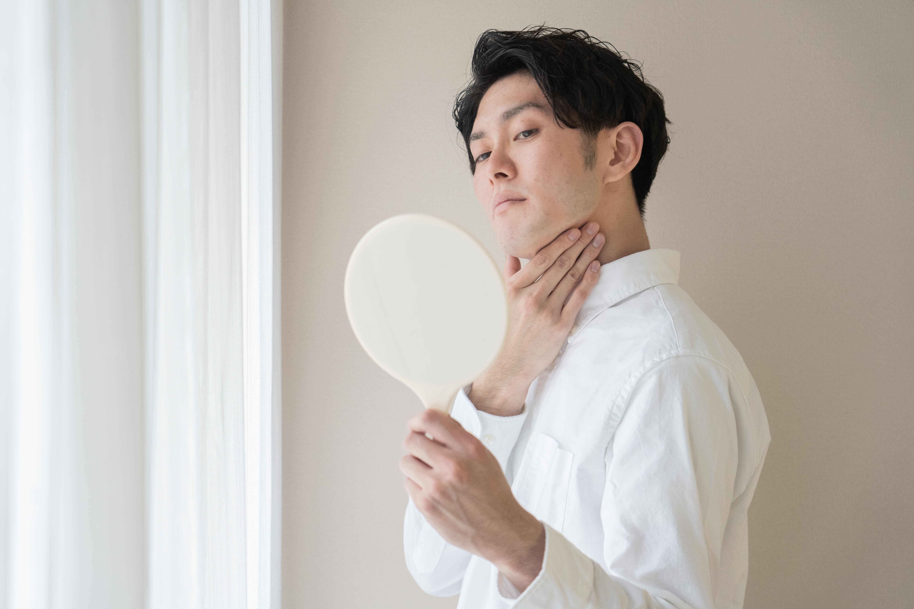

① 潤いバリアを整える
乾燥による肌のダメージをケアし、健やかな肌状態をサポートします。
ベタつきを一切残さない、30代からのエイジングケア。



乾燥による肌のダメージをケアし、健やかな肌状態をサポートします。
植物由来成分など、肌をすこやかに整えるための成分を厳選。
化粧水・乳液・美容液・クリームの役割をひとつに。
肌の乾燥や年齢による変化に着目し、健やかな肌環境をサポート。
肌にうるおいを長くキープし、長時間うるおいを保つ保湿設計。
肌にやさしく、さっぱりとした使用感を目指した処方です。

テカリ・乾燥・毛穴・肌荒れなど、男性の肌悩みに寄り添います。

使用量や使用頻度によって異なりますが、朝晩の使用で約1か月を目安にお使いいただけます。
肌質には個人差があります。初めて使う場合は、腕などで少量を試してからご使用ください。
しっとりうるおいながらも、ベタつきにくい使用感を目指したテクスチャーです。
年齢を問わず、男性の毎日のスキンケアとしてお使いいただけます。